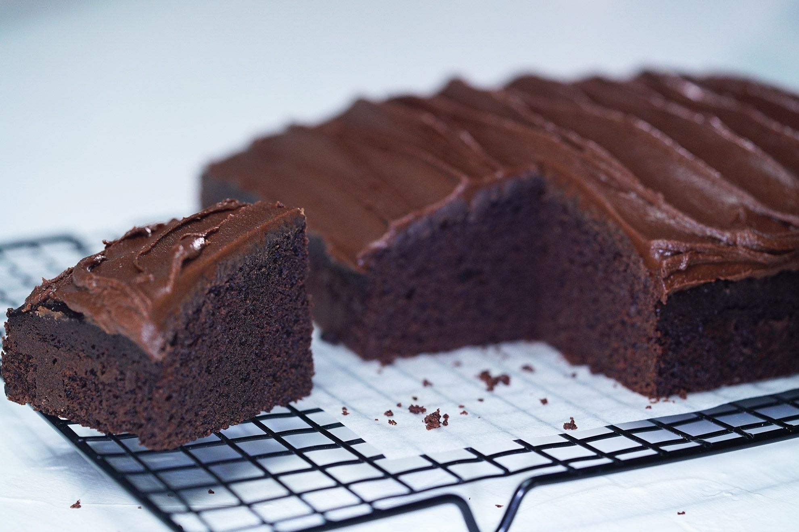

Recipe Blog by Brian
Recipe #1: Chocolate Cake
 |
 |
|
 |
Ingredients Required:
- Cooking spray
- Cocoa powder
- Flour
- Sugar
- Baking powder
- Salt
- Eggs
- Vegetable oil
- Sour cream
- Vanilla extract
Instructions:
- Preheat the oven to 350 degrees Fahrenheit and apply cooking spray to your cake pan.
- Place some parchment paper to the bottom of the cake pan
- Get yourself a medium sized bowl and pour in 1 cup of cocoa powder and 1 1/2 cups of hot, boiling water. Whisk both until it is smooth.
- Whisk 2 1/2 cups of flour, 2 cups of sugar, 1 1/2 cups of baking powder, 1 teaspoon of baking soda, and 1 teaspoon of salt in a large bowl.
- Add in 3 eggs, 3/4 cup full of vegetable oil, 1/2 cup of sour cream, and 2 teaspoons of vanilla extract and use a mixer at its medium speed setting for about a minute. Once it is finished, lower the speed and mix the batter manually with a utensil, preferably with a rubber utensil like a spatula.
- Place the batter into the prepped pan and bake in the oven for about 30 to 40 minutes. You will know it is ready if you stick a toothpick inside the final result and it comes out with little to no marks. Let it settle and cool down for ten minutes and enjoy the chocolate cake once you plate it!